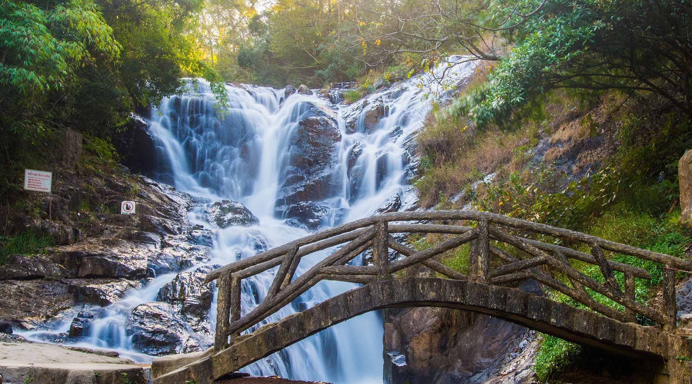

Khám Phá Đà Lạt
Đà Lạt, thành phố nằm trên cao nguyên Lâm Đồng, Việt Nam, được biết đến với khí hậu mát mẻ, cảnh đẹp hùng vĩ, và kiến trúc độc đáo.
Với độ cao khoảng 1.500 mét so với mực nước biển, Đà Lạt không chỉ là một điểm đến lý tưởng để tránh nóng, mà còn là nơi thu hút du khách bằng những trải nghiệm du lịch đa dạng.
Những Điểm Du Lịch Nổi Tiếng
- Hồ Xuân Hương: Một hồ nước lãng mạn nằm giữa trung tâm thành phố, là nơi tuyệt vời để tận hưởng không khí dễ chịu. 
- Thác Datanla: Một thác nước tuyệt vời, thuận lợi cho việc thăm dò và trải nghiệm thiên nhiên.
- Thung lũng tình yêu: hung Lũng tình yêu không chỉ đẹp về mặt cảnh quan thiên nhiên núi rừng hùng vĩ hoang dã màu sắc rực rỡ mà những con người đến đây cũng đều hiện lên thật đẹp, nhất là những cặp tình nhân, đôi lứa đang yêu nhau hiện lên bên trong những khóm hoa, tán lá cây thông dưới những hình thù trái tim bàn tay… Đến đây hãy đi cho hết đến cuối cùng của đập nước Đa Thiện bạn sẽ thấy chiếc vòi nước trên không trung phun từng bọt nước xuống dưới mặt hồ thật đặc sắc. Cùng đạp vịt quanh hồ thì còn gì tuyệt vời hơn nữa chứ.
Đặc Sản và Ẩm Thực
Khám phá văn hóa ẩm thực độc đáo của Đà Lạt với những đặc sản như dâu, mận và cà phê Arabica thơm ngon.
Hoạt Động Ngoại Ô
Ngoài ra, du khách có thể tham gia các hoạt động như trekking qua rừng thông, thăm các vườn hoa đầy màu sắc, hoặc thưởng thức đặc sản tại các quán cà phê ẩn mình trong những con ngõ nhỏ.